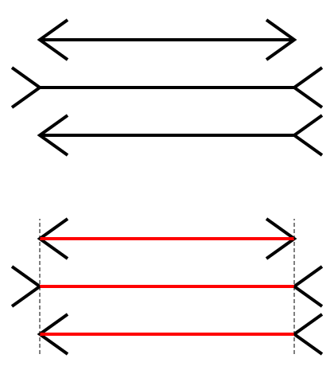

What do you see?
The behavioral science of visual information perception on the Internet.

Table of Contents
- 01 The Internet as a Visual System Why behavioral science matters for what pixels do to people — and what people do with pixels. →
- 02 Attention, Saliency, and the Gaze Where the eye lands, what it skips, and how interfaces silently steer both. →
- 03 From Retina to Heuristic Perceptual illusions, cognitive shortcuts, and the biases that shape every click. →
- 04 Color, Contrast, and Consequence The physics of light, the biology of cones, and the ergonomics of call-to-action. →
- 05 Motion as Meaning What animations communicate, when they distract, and why timing is tone. →
- 06 Noise, Signals, and Trust How visual clutter erodes confidence — and how restraint rebuilds it. →
- 07 Scaling Beyond the Screen Responsive perception: from watch to wall, from reader to re-reader. →